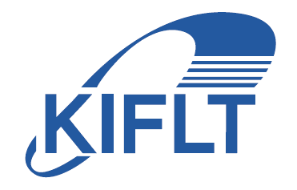

Waste Management
Waste Management
· 600,000 tons of waste are generated annually
 Chemical Pollution
Chemical Pollution
· 250 types of chemicals are used in the manufacturing process
· Carcinogenic substances, such as chromium and cyanides, are released into the environment
Discarded Food By-Products
· Methane gas is emitted during incineration
· However, recycling rate is below 20% (based on coffee grounds)

Supplied various products through collaboration with LOTTE, GS Retail, KAKAO, Maison 21G, etc
GSRetail X MAISON 21G
KAKAO X JEJU
2024 KOREA - AFRICA SUMMIT
LOTTE

OUTBACK

TIMBERLAND
Antimicrobial, deodorizing, and 1.5x stronger than regular leather performance alternative to conventional leather


1. Certified Antimicrobial and Deodorizing for 11 Hazards
Swiss SGS hazardous certification
2. 120% Highly Tensile Strength than Natural Leather
Validated by Korea Shoe and Leather Research Institute
3. 95% Highly Recycled Materials
Global Recycled Standard certified
Contact
34-18, LS-ro 182beon-gil, Gunpo-si, Gyeonggi-do, Republick of Korea
010-7607-2106